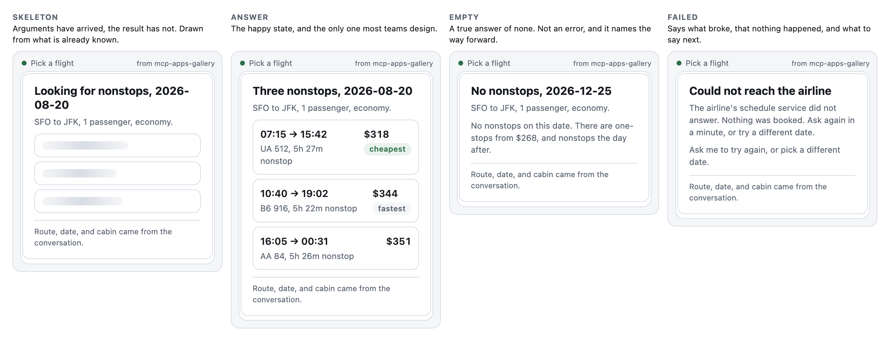

Chapter 3
How People Actually Use Apps in Chat
Glancing, satisficing, partial attention, streaming data, and a viewport you do not control.
Krug’s second chapter is the one that reframes everything, because it replaces the user you imagine with the user you have. His finding, from watching people rather than asking them, was that nobody reads, everybody scans, and they do not choose the best option but the first one that plausibly works. All of that transfers to this medium without amendment. Then chat adds three complications of its own, and the three are the reason the transplant is not simply a matter of making things smaller.
Nobody reads your dashboard
Here is what actually happens when your widget renders. The user is mid-conversation. They typed something, they are waiting, and they are also looking at Slack. Your widget appears. They look at it for somewhere between a third of a second and two seconds, and in that window they decide one of three things: this answers my question, this is not for me, or there is something here I need to touch. Then they either act or they type the next message.

That is the design target. Not a worst case, not an unengaged user, not somebody being rude to your work. It is the median interaction, and it is the median because the user is not in your app at all. They are in a conversation, and your app is one paragraph of it, competing for attention with the paragraph above and the one they are composing.
Two consequences follow immediately and they organise everything else in this chapter. The first thing readable must be the answer: not the title, not the brand, not the loading state if you can avoid one, and if your widget takes a beat to resolve then the beat should resolve into the verdict with supporting detail arriving afterwards. And everything else is optional, which is not the same as unimportant. It has to be available to the person who wants it and invisible to the person who does not, and those are frequently the same person half a second apart.
Krug’s other finding was that people satisfice: they do not evaluate options, they take the first one that looks like it will work, and they are right often enough that the habit survives contact with reality. In a chat surface this gets stronger, because the cost of being wrong dropped through the floor. If the user clicks the wrong thing they can just say so. “No, the other one.” The model fixes it. Compare that to a web form that lost your input on submit, which is the experience that taught a generation to read carefully before clicking anything. So users here click fast and correct verbally, and you should design for it: make the first plausible option the correct one where you can, make wrong choices cheap to reverse and say so where they can see it, and do not build interfaces that punish speed. Multi-step wizards with validation at the end punish speed. A confirmation that summarises what is about to happen does not.
There is a second-order effect here worth sitting with, because it changes what you optimise. On the web, a slow page loses users at the door and a fast page gets a chance to be judged on its merits, so speed buys you attention. Here the render is already in front of somebody whose attention you have for a fixed and very short window regardless of how fast you were. Speed does not buy you more window. It buys you a larger fraction of the window spent on your content rather than on your loading state, which is a real gain and a smaller one than the web trained everybody to expect. The larger gain available to you is compression: saying the thing in fewer glances, not saying it sooner.
Which is why the rest of this chapter is about hierarchy rather than performance. A widget that takes 200ms and needs three seconds of reading loses to a widget that takes 600ms and answers in one glance, every time, in a way no performance budget will ever show you.
Data arrives in pieces
Here is the first complication that is genuinely new. On the web your page loads and then it renders. In this medium the render happens first: the host has prefetched your template and put it on screen while the tool call is still in flight, then the arguments arrive, then, some time later, the result arrives. That is not an edge case or a slow-network scenario. It is the normal sequence, described in Chapter 6, and it means your app’s first state is no data and its second state is some data, both of which are screens a user will look at.
Which makes the skeleton a screen you designed rather than a default you inherited. A good skeleton in this medium does one thing a web skeleton cannot: it uses the arguments. By the time you are drawing it you already know the tool was called with origin: "SFO", destination: "JFK", date: "2026-08-20", so you can draw the title, draw the route, and draw the three grey rows where the flights are going to land. The user reads the header while the data arrives and the perceived wait is close to zero, because they were busy. The version that shows a spinner over an empty box has thrown away information it already had.
The gallery’s bridge gives you two callbacks and most apps only wire the second one. Wiring both looks like this:
app.ontoolinput = function (params) {
var a = params.arguments || {};
title.textContent = "Three nonstops, " + a.date;
sub.textContent = a.origin + " to " + a.destination + ", " + a.cabin;
opts.innerHTML = row() + row() + row(); // three grey placeholders
};
app.ontoolresult = function (result) {
flights = (result.structuredContent || {}).flights || [];
render();
};Six lines in the first callback, and the user spends the whole wait reading something true. No spinner, and no layout shift when the data lands, because the three rows were already the right height. The rule underneath is to draw everything the arguments already tell you, which is usually the route, the date, the count, the units, and the title, and then draw the shape of what is coming, so that the only thing changing on arrival is the content of the placeholders. Design the failure state while you are in there, because tool calls fail, and a widget that sits in skeleton forever is worse than one that says “could not load the flights” with a retry. The first one looks like it is still trying.
The guest viewport
Your app renders in a column. In Claude on a phone that column is roughly 380 CSS pixels wide; on a laptop it is wider, but not much, because the transcript is centred and the surrounding chrome is not yours to remove. You do not get to choose this and you do not get to break out of it. A widget that needs 900 pixels does not become a widget that gets 900 pixels. It becomes a widget with a horizontal scrollbar, which is a widget nobody uses.
So design at 380 and let it grow, rather than the other way around. The direction matters more than it sounds like it should, because designing wide and shrinking produces a layout with a wide-screen soul, where the mobile version is visibly the compromise and the important thing is the one that got cut. Designing narrow and expanding produces a layout that is correct everywhere and merely comfortable in one place. In practice that means two columns of numbers at most, three if one of them is an icon; tables above about four columns need a different shape entirely, usually a list of cards where each card is one row turned sideways; long labels wrap, so test with the longest label in your data rather than the shortest; and never fix a height, because you report your height with ui/size-changed and the host gives you what it can.
And the one that catches everybody: the theme is not yours. The host supplies it, the user may be in dark mode, and they may switch while your app is on screen. Paint with the host’s variables and give every one of them a fallback in your own stylesheet, so that a host supplying two tokens instead of twelve gives you a plain widget rather than an invisible one. If you hard-code background: white you have built a bright rectangle that shouts in a dark transcript, and users notice that faster than they notice anything else you did all quarter.
The 380 pixel checklist
Run this before you ship. It takes four minutes and it catches most of it. Set the frame to 380 pixels and read the widget: can you get the answer without scrolling? Set it to 320, because somebody is on a small phone with large system text. Replace every string with the longest one in your data and look for anything that wraps to three lines or clips. Switch the host to dark, check that nothing has gone invisible and that your background is painted with a token rather than a hex code, then switch it back while the widget is on screen and see whether it followed. Remove the data and ask whether the skeleton is a screen or an accident. Then open every disclosure and confirm the height report updated. The gallery’s mini host has a width slider and a theme toggle above the transcript for exactly this loop.
The states nobody designs
Every widget has four states and most teams design one of them. There is the happy state, with data, which is the one in the design file. Then there is the skeleton, covered above. Then there are two more, and they are the ones users actually complain about.
The empty state is what your widget shows when the call succeeded and the answer is nothing. No flights on that date. No invoices in July. No services degraded. This is not an error and it should not look like one, because the user asked a question and got a true answer, and a red box saying “no results” makes a correct answer feel like a failure. What an empty state owes the user is the same three levels as any other render: the verdict, which is that there are none; the reason, which is usually the scope, so no nonstops on the 20th, only one-stops; and a way forward, which in this medium is almost never a button. It is a sentence telling the model what to try, because the user will read “no nonstops” and say “fine, show me one-stops”, and the model needs to know that is a thing it can do.
The empty state also owes the model something the happy state does not. Write back the emptiness explicitly, because “found 0 invoices for July” is a fact and silence is not. A model that receives nothing is free to conclude that the tool failed, that the data is still loading, or that it should try again with the same arguments, and all three of those are worse than being told plainly that the answer is zero.
The error state is what your widget shows when the call did not succeed, and it has a different job. Say what failed and what the user can do next, in the widget, in place, without replacing the content they were looking at, because a card that blanks itself on failure has destroyed the context along with the request. The most useful error in this medium names the retry: could not reach the deploy API, ask me to check again in a minute is a sentence a user can act on with their voice, which is the cheapest recovery mechanism available and the only one that works when your refresh button is exactly what is broken.

Look at what the empty state in that figure says, and at what it does not say. It does not say “no results”. It says which date it looked at, that there are none, that one-stops exist and what they cost, and that nonstops resume the next day. Every one of those is a sentence the user can reply to, and all four are written back to the model as well, so “fine, show me the one-stops” is a call the model already knows how to make. The failure state does the same job with different material: it names what broke, states plainly that nothing was booked, which is the fact somebody is actually worried about, and ends with the two things worth saying next.
There is a fifth state that only exists here, and it is worth designing on purpose: the widget that outlived its usefulness. The picker that was used, the confirmation that was confirmed, the tracker for a deploy that finished an hour ago. Chapter 8 covers what to do about it. Chapter 3’s contribution is to notice that this state is a screen somebody looks at, which puts it on the list with the other four.
Billboard design, one glance at a time
Krug’s chapter on billboards is about hierarchy: make the important thing look important, and make the relationship between things visible without anybody having to read them. The chat version is stricter, because you have less room and less time, and it comes down to three levels. A widget with more than three is asking for a reading rather than a glance, and it will not get one.
Level one is the verdict. One line, the largest thing on screen, the answer to the question that caused the render: degraded: checkout is slow, nothing is down, or Cedar Credit Union, $34,835. If the user reads only this, they should be able to act. Level two is the why, in one sentence or two or three numbers, enough to trust level one or to notice that level one is wrong: one dependency is timing out on 4% of calls, everything else is nominal. Level three is everything else, behind a disclosure and genuinely available: per-service tables, historical detail, the fields the compliance team asked for in a meeting eighteen months ago.
The glance test
You can run the hierarchy check on your own widget in about a minute, and it is the closest thing this book has to a lab instrument. Open the render, look away, look back for one second, then close your eyes and write down what you got. Not what you know is there, what you got. If what you wrote is the answer to the question that caused the render, the hierarchy works. If what you wrote is “a card with some numbers on it”, it does not, and the fix is almost always the same three moves: make one thing much bigger, make one thing a colour, and delete something.
It works better on other people’s widgets than your own, because you cannot un-know your own layout, so two colleagues and four minutes will tell you more than an afternoon of arguing about spacing. The failure it catches most often is the tie: three things at the same size, same weight, same colour, all important. A glance cannot rank them, so it returns nothing and the user has to read. Ties are the default state of any layout nobody has made a decision about.
Teardown: two ops dashboards
The task: “how are things looking?”

Twelve tiles, and every one of them is a real metric that somebody genuinely needs some Tuesday. There is no level one. There is no level two. There are twelve level threes and a set of sparklines with no axis, no scale, and no label a glance can use. The user asked how things are looking, and this widget replies with the contents of a filing cabinet and lets them do the synthesis, which is precisely the work they were hoping to delegate. Watch what it does at 380 pixels: four tiles per row becomes four tiles jammed per row, about eighty pixels each, containing a number and a label in nine point type. It is technically responsive and practically illegible.

Same data. degraded, colour-coded, first. Then the sentence that explains it. Then three numbers, of which two are marked as the alarming ones, so the eye has somewhere to go. Then a disclosure holding the per-service table, which is where the other nine metrics went. Nothing was deleted; the hierarchy was applied, and applying hierarchy is mostly a matter of being willing to say which number matters most, which is a decision somebody has to make and which nobody enjoys making.
Notice the last line: As of 09:41 UTC. A status widget without a timestamp is asserting the present tense on the strength of a fetch it made at an unknown moment, and Chapter 7 is about what that costs.
Motion, and the one place it helps
A short word on animation, because chat surfaces invite it and mostly punish it. Movement in a transcript is different from movement on a page, because the transcript is already moving: messages arrive, the view scrolls, the composer is live. Adding motion to that is adding motion to motion, and the result is a surface nobody can settle on.
Two rules cover it. Never move anything that is already readable, so fade in if you must but do not slide, expand, or reflow after the user has started reading; layout that settles late is the single most disliked thing an interface can do on a phone, and it is the reason to report your height before you paint rather than after. And animate the one thing that is genuinely changing: a number that just went from 4.1% to 6.2% can move, because the movement carries information, while a card that fades in three staggered rows is telling you nothing and costing a third of the attention budget in the figure at the top of this chapter. Under prefers-reduced-motion, do neither.
The first render is the homepage
Krug spends a chapter on the homepage, because it is the page that has to answer four questions at once: what is this, what do you have, what can I do here, and why should I be here rather than somewhere else. Your first render is that page with less room and less time, and it has to answer three. What am I looking at, in one line that is not your product name. What does it say, at level one. And what can I do about it, where zero controls is a fine answer and one is usually the right one.
If the render answers those three in the first half second, the rest of the design is decoration you may or may not need. If it does not, no amount of decoration will save it, and the most common way to find out is that nobody ever mentions your widget again.
What to remember
People glance, satisfice, and correct verbally, and all three of those get stronger here rather than weaker. Data lands in pieces, so the skeleton is a screen you designed and it should use the arguments you already have. The viewport is narrow, the theme is not yours, and the height is a request rather than a decision. Hierarchy is three levels: verdict, reason, everything else.
Next chapter: the single rudest thing a widget can do, which is ask a question whose answer is already in the transcript.